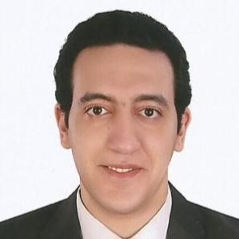

Ehab Hamdi Mohamed Moussa
Address: Alexandria-Egypt
Mobile: +201023078011
E-mail:Ehab.Hamdi.Mohamed.moussa@gmail.com
Objective:
Seeking Challenging and rewarding level position in web development accross mulinational or local organization demanding high standards
of quality and providing opportunities to amalgamate my personal enrichment with professional goals.
Value Addition:
- Ensuring proper presentation of Financial Statements in accordance with International Financial Reporting Standards (IFRS)
- Ability to support and sustain a positive work environment that fosters team performance with strong communication and negotiation skills.
Work Experience
Senior customer care representative - Intelcia - (May 2021) Until now
Accoutntant -Mohamed Badrawi Chartered Accoutning Office - Egypt - (Jan - Dec 2020)
Assistant Accountant - Al Magrabi Hospitals - Abu Dhabi - (Jan to Sep) 2019
Assistant Recovery Officer - Al Khazna insurance company- Abu Dhabi - (Oct- 2016) To (Dec - 2018)
Accountant - iDigit Systems - Dubai - (Jan - 2014) To (Aug -2016)
Junior Accountant Mohamed Badrawi Chartered Chartered Accounting Office- Egypt (July-2012) To (Dec - 2013)
Key Responsibility:
- Preparing monthly journal entries
- Assist in Financial Statement Review
- Accounts daily cash and petty cash
- Prepare analysis of accounts
- Prepare audit programs based on identified risks and controls
- Perform audit procedures and perform any other related duties as assigned
- Manage all accounting transactions.
- Provide accurate, valid and complete information by using the right methods/tools
- Meet personal/customer service team sales targets and call handling quotas
- Follow communication procedures, guidelines and policies
- Reconcile accounts payable and receivable.
- Ensure timely bank payments.
- Compute taxes and prepare tax returns.
ACADEMICS PROFESSIONAL QUALIFICATIONS AND CERTIFICATIONS
- Advanced Claim Management Certificate
- ICDL
- Bachelor's Accounting from Alexandria University
- TOEFL
- Diploma Degree in Accounting from Emirates College of Technology
- Higher Secondary School Certificate (Darwish Bin Karam), Abu Dhabi, UAE
Personal Information
Date of birth : 11- June-1989
Nationality : Egypt
Language : English and Arabic
Marital Status : Single
Gender : Male
Reference : May be furnished upon request
Driving License : Holding Egyptian Driving License